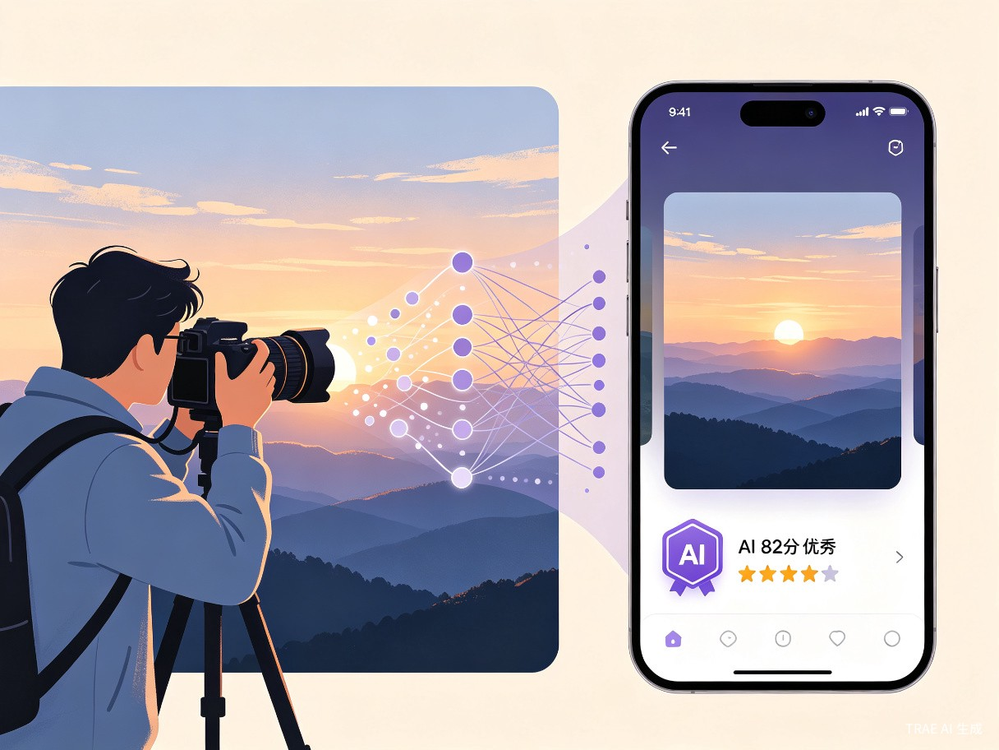

全球首个「AI审美 × 人类审美」PK图片社区
让每一张照片都有专业的AI评分，让每一次分享都有价值的审美碰撞
AI评分社交圈是一款基于AI图像评分技术的创新图片社交平台，旨在为全球摄影爱好者提供专业的AI审美评价与社区互动体验。
全球首个「人机审美PK」图片社区，AI评分与用户评分共存，激发审美碰撞
基于13年摄影经验训练的AI审美引擎，从构图、光影、色彩、主题、技术五大维度专业评分
AI隐形水印 + 视觉指纹 + 区块链存证三重保护，让摄影师安心创作
长按图片直接聊天，无需评论；图片-only发布，专注视觉表达
四大创新功能模块，重新定义图片社交体验

每条带图片的动态都会获得AI自动评分（1-100分），同时用户可以通过滑块进行独立打分。系统会实时显示用户评分与AI评分的差值——"比AI高X分"或"比AI低X分"，激发用户的参与欲和审美自信。
AI评分基于构图、光影、色彩、主题、技术五大专业维度，配合颜色梯度反馈（红→橙→黄→绿→蓝），让评分结果直观易懂。
针对摄影师最担心的盗图问题，我们提供三重保护方案：
隐形水印 — AI自动嵌入肉眼不可见的数字水印，盗图者可提取验证
视觉指纹 — 提取图片唯一视觉特征，全网追踪盗图
区块链存证 — 图片哈希上链，生成不可篡改的版权证书（¥9.9/次）
纯图片发布，无文字干扰。支持相册选择和相机拍照两种方式，发布即自动获得AI评分。强制显示定位信息，增强内容真实感。
创新的交互方式——长按图片即可跳转到与该用户的聊天界面，无需传统的评论系统。更私密、更直接的社交体验。
与现有图片AI评分及社交产品的全方位对比
| 产品 | AI评分 | 社交属性 | 版权保护 | 专业审美 | 用户评分 |
|---|---|---|---|---|---|
| ✗ | ✓ | ✗ | ✗ | ✗ | |
| 小红书 | ✗ | ✓ | ✗ | ✗ | ✗ |
| Image Ranker | ✓ | ✗ | ✗ | ✗ | ✗ |
| VibeRate | ✓ | ✗ | ✗ | ✗ | ✗ |
| AI评分社交圈 | ✓ | ✓ | ✓ | ✓ | ✓ |
摄影社交市场的巨大机会
摄影爱好者拍完照片后缺乏专业反馈，朋友圈点赞都是人情，不是真实评价
摄影师作品被盗用频发，但维权成本高、举证难，缺乏有效的版权保护工具
Instagram、小红书等平台功能雷同，缺乏创新的互动方式和审美评价体系
十三年摄影功底 + AI技术 = 真正的护城河
多元化变现路径，从C端到B端全覆盖
| 变现方式 | 定价 | 目标用户 | 预期占比 |
|---|---|---|---|
| 基础功能 | 免费 | 所有用户 | 获客入口 |
| Pro会员 | ¥29/月 | 进阶摄影师 | 40% |
| 区块链存证 | ¥9.9/次 | 专业摄影师 | 10% |
| B端API | 按次收费 | 电商/图库/相机厂商 | 30% |
| 摄影课程 | 佣金分成 | 学习者 | 20% |
摄影 + AI 的双重基因
从MVP到全球化的三步走战略
让AI成为每一位摄影师的审美导师
"让每个人都能拍出好照片，让每张照片都有专业的AI评价，让审美成为一种可量化的游戏。"
— AI评分社交圈团队
完成MVP开发，获取10万种子用户，验证AI评分准确度和用户付费意愿
突破100万用户，AI评分准确度达到90%+，实现月度盈亏平衡
成为全球摄影爱好者的AI审美社区，定义图片社交的新标准